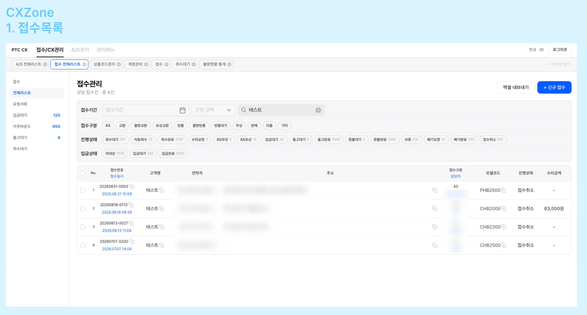
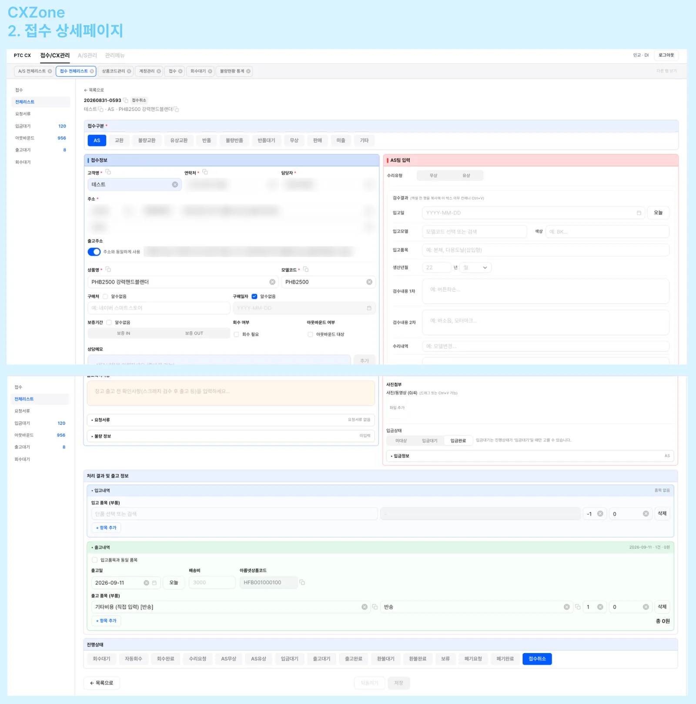
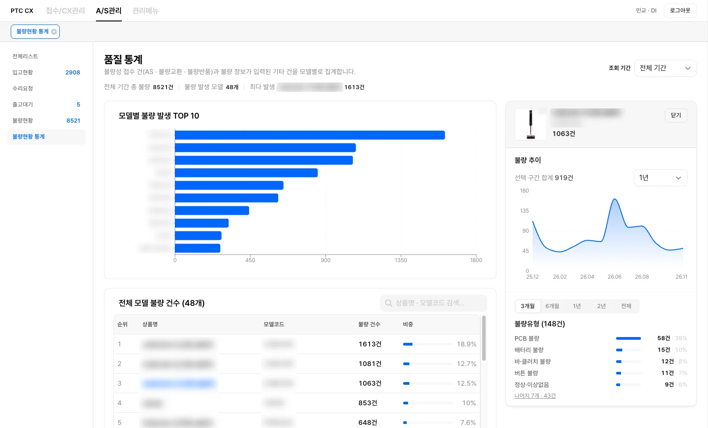
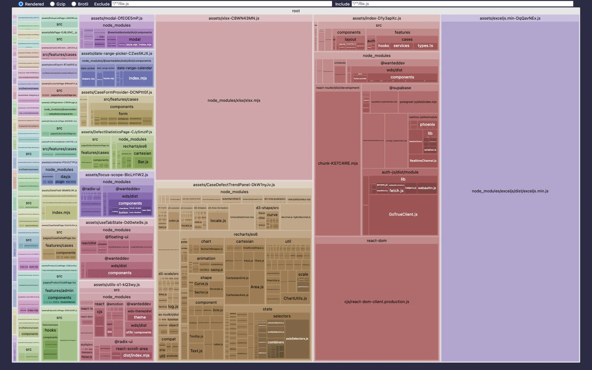

개요
- 사람이 손으로 하던 반복 업무를 데이터와 자동화로 전환
- 외부 시스템을 대체한 사내 서비스, 매출 자동 등록, 업무용 크롬 확장, AI 광고 분석 자동화
- 기획부터 개발·배포·운영까지 1인 담당
화면



기술 스택
PythonReactSupabase
주요 성과
CS 접수 · A/S 관리 웹
- 단위 테스트 0개 → 29개
- 테스트 과정에서 입금 시각이 52초 밀리는 라이브러리 버그 발견
- 번들 분석(Vite Bundle Visualizer)으로 첫 화면에 실리던 큰 라이브러리 확인
- 엑셀 라이브러리(exceljs·xlsx)를 실제 내보낼 때만 불러오도록 분리 → 첫 화면 JS gzip 666KB → 294KB (56% 감소)
- 불량 추이 차트(recharts)도 불량 건 상세에서만 불러오도록 lazy 로딩 적용

AI 불량유형 분류
- 주 불량 정확도 52.5% → 72.7% (보조 불량 인정 시 79.5%)
- 200건 52.5% → 정보 없는 기록 24건 제외, 176건 기준 59.7% → 헷갈리는 항목에 예시 추가 67.6% → A/S팀과 정답 기준 확정 72.7%
- AI가 근거로 든 문장이 실제 기록에 있는지 코드로 검증, 176건 중 166건 일치
- 306종을 14개로 묶은 매핑표를 품질 통계 화면의 불량유형 집계에 적용
사방넷 풀필먼트 매출 자동 등록
- 하루 약 20건의 매출전표·송장 등록 무인 처리 (주문 1건에 송장 9개도 한 번에 등록)
- 중복 확인 조회 주문당 20~40회 → 실행당 1회
- 14일 재확인 + ERP 기준 중복 판정으로 재실행해도 중복 없음, 늦게 출고된 발주까지 등록
단가 일괄수정 크롬 확장
- 1회 약 1시간 걸리던 작업(전표 30건 × 건당 2분)을 검색 한 번 + 일괄 적용으로 대체
- 3일 만에 개발해 현업 적용
- 검색 결과 13건 → 화면과 같은 58건 조회, 저장 요청 159개 항목 값 불일치 0건
경쟁사 광고영상 분석 자동화
- 매일 아침 1시간 수작업 → 평일 07:30 자동 실행
- 하루 3~4건 분석 결과를 시트에 기록, 성공·실패 모두 알림
트러블슈팅 · 회고
CS 접수 · A/S 관리 웹
- 인덱스 효과를 관리자 계정으로만 확인한 실수. 직원 계정은 권한 함수 때문에 인덱스를 안 타고 있었음 → 이후 성능은 실제 사용자 권한으로 측정
- 서버로 들어오는 SSH 배포가 계속 끊김 → 러너를 서버 안에 두는 구조로 변경, 외부 접속과 GitHub에 맡길 SSH 키가 필요 없어짐
- 테스트를 붙이다가 석 달 동안 놓치고 있던 토큰 만료 발견
AI 불량유형 분류
- 남은 오답 상당수가 정답 기준이 안 정해진 항목이었음 → 프롬프트 수정 전에 A/S팀과 기준부터 맞춤
- 정보 없는 기록 24건을 뺀 뒤로는 모든 비교를 같은 176건 기준으로 다시 계산
- 건당 약 29초로 느려 미분류 6천여 건 적용은 남은 과제. 작은 모델·클라우드 API와 속도·정확도 비교 예정
사방넷 풀필먼트 매출 자동 등록
- 등록 기록을 내부 DB에 남겼더니 담당자가 ERP에서 전표를 지우면 어긋남 → 판단 기준을 ERP로 이동
- 소급 기간 3일·7일에서 늦게 출고완료된 발주 누락 → 같은 기간을 다시 돌려도 중복 등록이 안 되게 만든 뒤 14일로 확대
- 출고취소 전표를 정리하다 담당자가 고친 전표까지 지운 적 있음 → 자동화가 기록한 전표번호와 같을 때만 삭제
- 새 채널 연동 중 공용 코드가 배송지에 청구지를 복사하던 잠복 버그 발견·수정
단가 일괄수정 크롬 확장
- 저장 요청이 계속 거절됨 → 화면이 보내는 요청과 확장이 보내는 요청을 항목별로 비교해 원인 찾음
- 서버가 상품명 조건을 에러 없이 무시하고 있었음 → 조회 결과를 화면과 직접 비교해서 발견
- ERP 데이터를 화면에 그리는 부분의 XSS 위험 수정, 테스트 추가
경쟁사 광고 분석 자동화
- Gemini 무료 등급이 아침마다 503 에러·타임아웃 → Claude가 직접 분석하는 방식으로 전환
- 현재 맥 launchd 실행이라 맥이 꺼지면 그날은 건너뜀 → 서버 cron 이전이 다음 과제